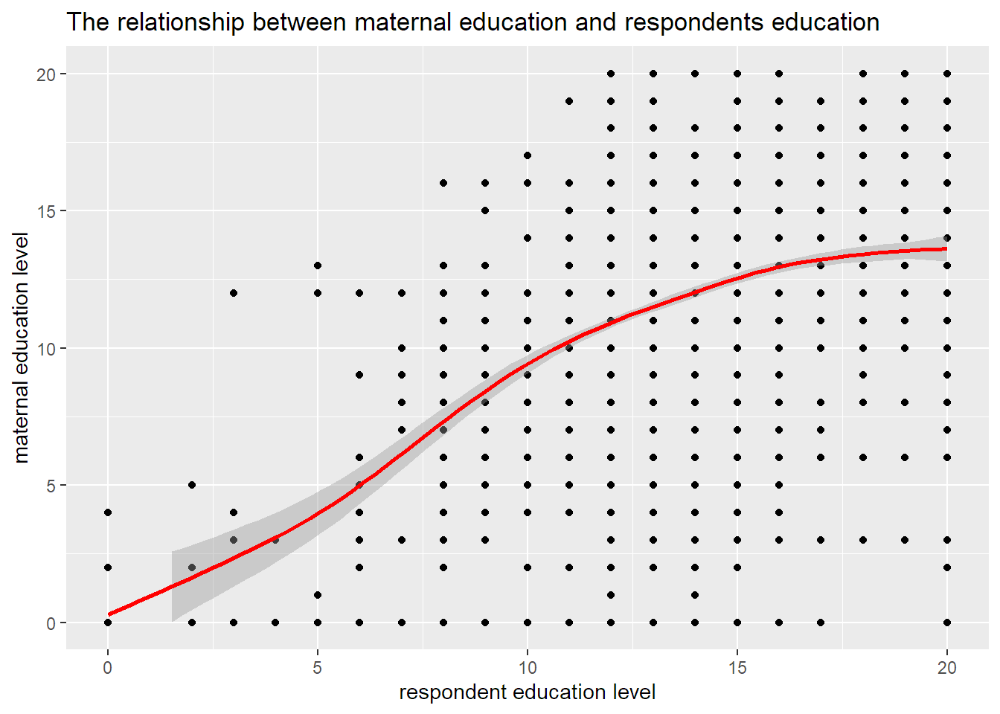

2022-08-02
Does higher parental education levels correlate to a higher level of education in their offspring?
This data is taken from the 2014 General Society Survey (GSS) Merged Single-Year Data Set. This data set, collected in 2014, looked at adults in the United States of America, with a sample size of 3842. The data set contained 3842 rows and 1001 columns.
It includes variables on topics such as marital status, labor force status, number of hours worked, occupational prestige, divorce status, level of education and similar data for their mothers and fathers.
The following work considers this data set and looks at educational correlates, exploring whether there is a relationship between parental education and that of the respondents.
The data used was provided as a zip file link from https://gss.norc.org/get-the-data/spss provided in the module guide tomstafford.github.io .
knitr::opts_chunk$set(fig.path='Figs/')#Load relevant libraries
library(haven)
library(gapminder)
library(ggplot2)
library(tidyr)
library(tidyverse)
library(socviz)
library(readr)
library(dplyr)
#Load data
gss2014merged_r10_spss <- read_csv("gss2014merged_r10 - spss.csv")View(gss2014merged_r10_spss)
# df <- read_sav("//studata05/home/PC/Pcp21ed/ManW10/Desktop/gss2014merged_r10 - spss.sav")
nrow(gss2014merged_r10_spss)## [1] 3842#Create new data frame
educ = gss2014merged_r10_spss$educ
maeduc = gss2014merged_r10_spss$maeduc
paeduc = gss2014merged_r10_spss$paeduc
gss2014merged_r10_spss <- gss2014merged_r10_spss %>%
select(educ, paeduc, maeduc)
head(gss2014merged_r10_spss)## # A tibble: 6 x 3
## educ paeduc maeduc
## <dbl> <dbl> <dbl>
## 1 16 97 9
## 2 16 16 14
## 3 13 97 12
## 4 16 12 12
## 5 17 8 17
## 6 17 16 14#Using ggplot to create a graph plotting respondent's education level against maternal education level and assigning it to variable p
p <- ggplot(data = gss2014merged_r10_spss, mapping = aes(x = educ, y = maeduc))
#Plotting a scatterplot and labelling x and y axis
p + geom_point() + geom_smooth() + labs(x = "respondent education level",
y = "maternal education level",
title = "The relationship between maternal education and respondents education")#Using ggplot to create a graph plotting respondent's education level against paternal education level and assigning it to variable q
q <- ggplot(gss2014merged_r10_spss, aes(x = educ, y = paeduc))
#Plotting a scatterplot and labelling x and y axis
q + geom_point() + geom_smooth() + labs(x = "respondent education level",
y = "paternal education level",
title = "The relationship between paternal education and respondents education")#Define axis limits and change the colour of the maternal education level line graph to differentiate from the paternal education level line graph.
p <- ggplot(data = gss2014merged_r10_spss, mapping = aes(x = educ, y = maeduc))
p + geom_point() + geom_smooth(color = "Red") + xlim(c(0,20)) +ylim(c(0,20)) +labs(x = "respondent education level",
y = "maternal education level",
title = "The relationship between maternal education and respondents education")
q <- ggplot(gss2014merged_r10_spss, aes(x = educ, y = paeduc))
q + geom_point() + geom_smooth(color = "blue") + xlim(c(0,20)) +ylim(c(0,20)) + labs(x = "respondent education level",
y = "paternal education level",
title = "The relationship between paternal education and respondents education")I chose to use a scatterplot to efficiently visualise a correlation between the factors I was analysing and determine the relationship between them. I chose to change the colour for the maternal eduction graph so as to differentiate the two graphs for ease of viewing.
In comparing maternal education level with that of the respondent, it can be deduced that there is a positive, nonlinear association between the two variables, albeit weak, and the same was seen when paternal education level was compared with the respondent’s education level. This suggests a weak positive relationship between parental education level and that of the respondent, where the higher the education level of the parent, the higher the education level of their child.
In future projects, it would be interesting to compare the two plots to determine whether maternal or paternal education level have a stronger relationship with that of the respondent. It would also be interesting to compare parental education level to their occupational prestige, as well as occupation prestige to the respondent’s education level to further explore factors influencing and involved with education.